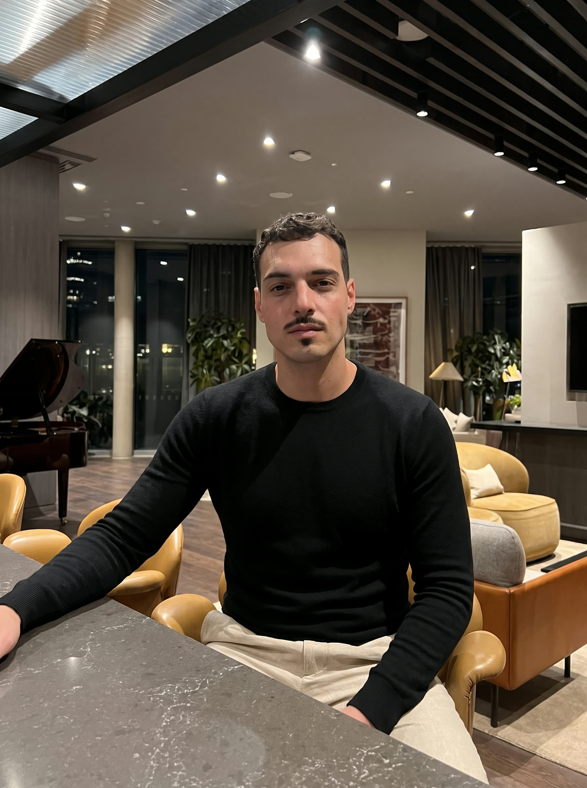
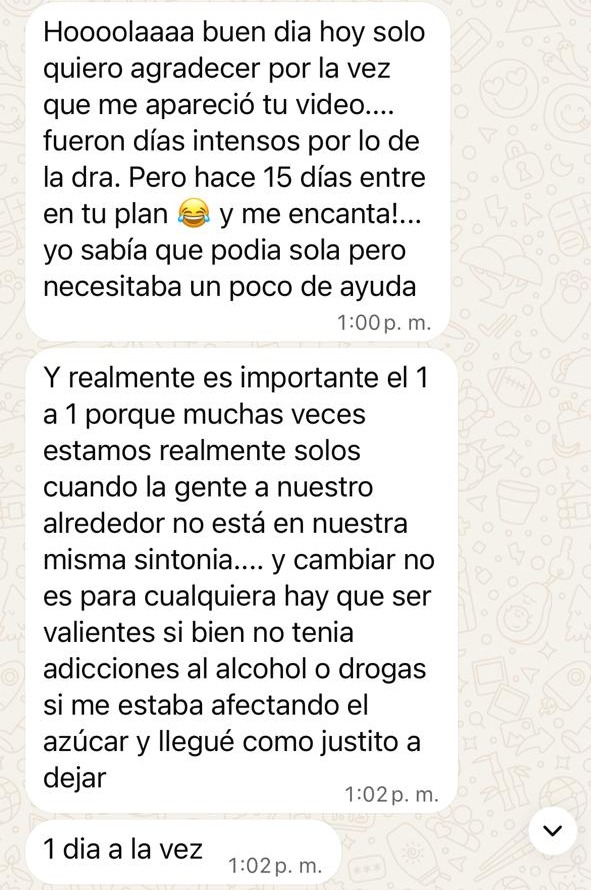
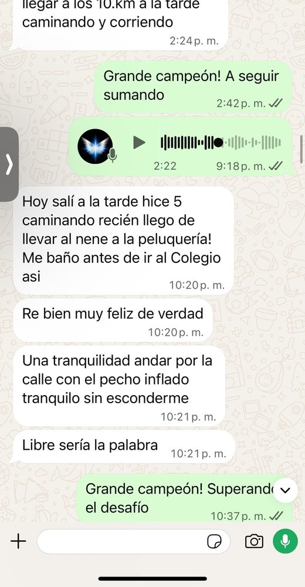
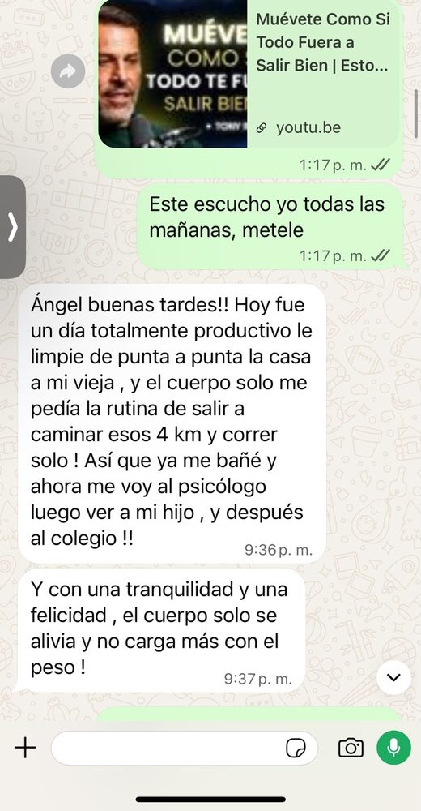
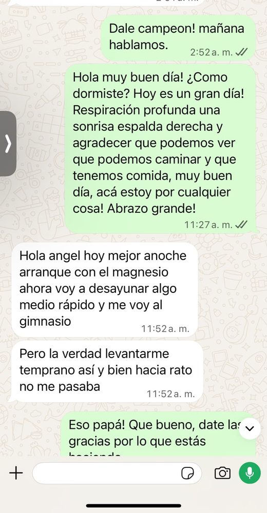
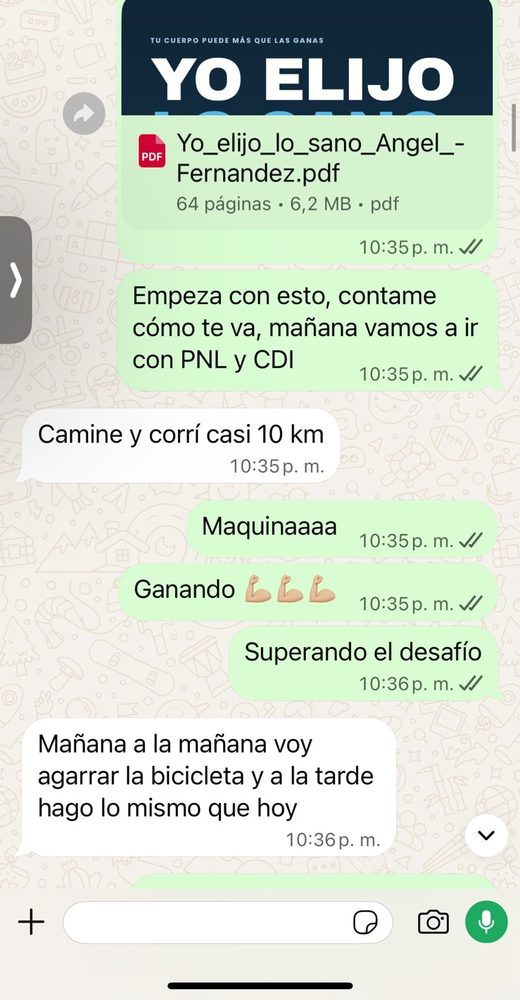
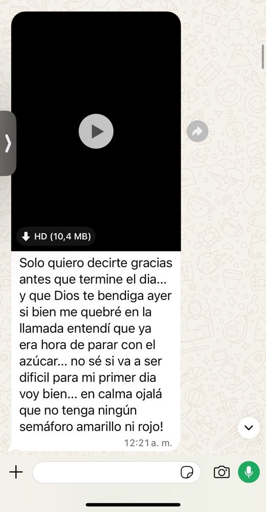
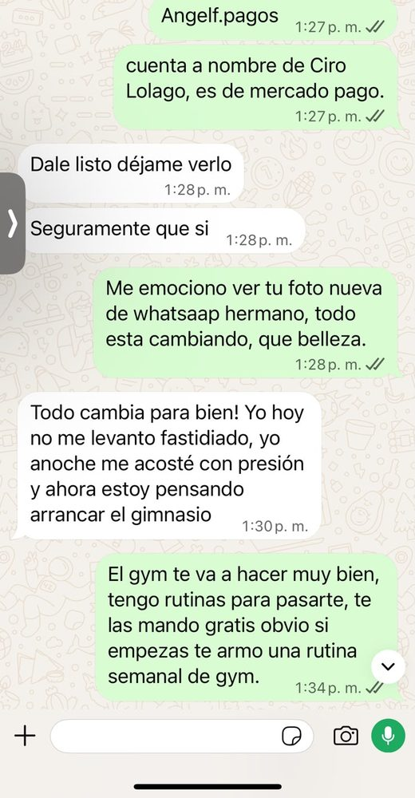
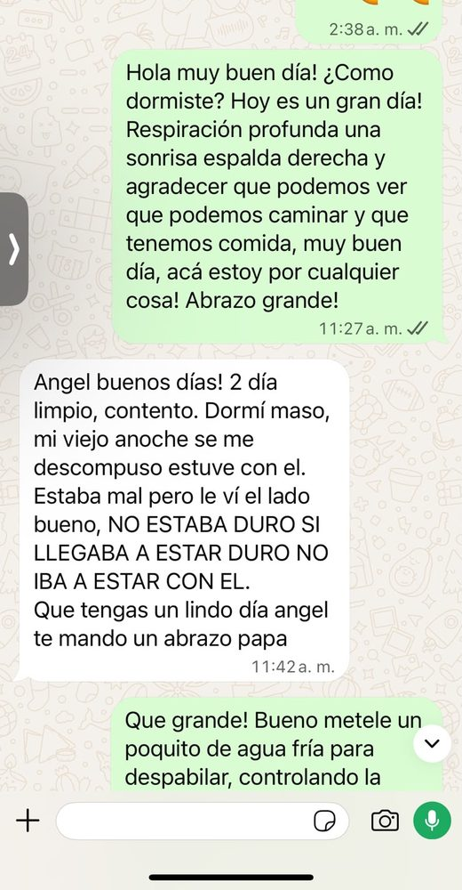

Una tranquilidad, andar por la calle con el pecho inflado, tranquilo, sin esconderme. Libre sería la palabra.
Yo también estuve ahí: diez años consumiendo, con miedo, recayendo, perdiéndolo todo. Hoy hace cuatro que estoy limpio, y me dedico a acompañar a gente que está donde vos estás. No tenés que hacerlo solo.

La TDC (Terapia de Dolor Controlado) no la inventé en un cuaderno: la armé con un equipo de profesionales de distintos campos y la probé primero en mí, diez años adentro y cuatro afuera. El método se apoya en tres pilares.
Se trabaja con tres herramientas que se complementan entre sí.
Terapia de Dolor Controlado. Estímulos físicos de no más de tres minutos, diseñados para aprender a controlar todo tipo de impulso que nos lleva al consumo. Se aplican en el momento exacto, y con la repetición el control deja de depender de la fuerza de voluntad.
Programación Neurolingüística. Herramientas para expresar y pensar la adicción de una manera que nos devuelva el control: el lenguaje con el que nos hablamos deja de justificar el consumo y empieza a sostener la decisión.
Herramientas para mantenernos limpios y mejorar los hábitos en todas las áreas de nuestra vida, no solo en lo que tiene que ver con el consumo.
Acompañamiento con suplementación natural para sostener el cuerpo a lo largo del proceso. No reemplaza ningún tratamiento ni indicación de un profesional de la salud.
El proceso no se sostiene solo con el método: se sostiene acompañado. Seguimiento personalizado por WhatsApp, con la línea abierta 24/7 para los momentos clave — cuando aparecen las ganas, una recaída, una crisis.
Mensajes que me llegan por WhatsApp, tal cual me los mandaron. No cambié una palabra: solo reservé nombres y números.
Una tranquilidad, andar por la calle con el pecho inflado, tranquilo, sin esconderme. Libre sería la palabra.
La verdad, levantarme temprano así y bien hacía rato no me pasaba.
El fin de semana fue genial en familia, comiendo de asadito tranqui. Nada de alcohol, nada de nada, y haciendo los ejercicios siempre.
El cuerpo solo me pedía la rutina: salir a caminar esos 4 km y correr solo. Con una tranquilidad y una felicidad enormes.
Yo hoy no me levanté fastidiado, anoche me acosté con presión y ahora estoy pensando arrancar el gimnasio.
No, impecable. El fin de semana lo pasé tranquilo, mirando una serie. No me han mandado ninguna y tampoco se me cruzó mucho por la cabeza.








Capturas sacadas de mi propio WhatsApp, sin editar. Nombres y números reservados.
Esto es para el momento exacto en que aparece la necesidad. No necesitás nada: ni plata, ni gimnasio, ni que nadie se entere.
«Esto son las ganas. Ya sé lo que es. Va a pasar.» Ponerle nombre ya te saca del piloto automático.
Los estímulos físicos de no más de tres minutos están diseñados exactamente para este momento: bajar el volumen del impulso y devolverte el control. Son concretos, y funcionan aunque no tengas ganas de hacer nada.
«Yo puedo. Yo tengo el control. Yo elijo lo sano.» El lenguaje con el que te hablás es parte del método.
¿Siguen? Otra ronda. Las ganas tienen menos aguante que vos: siempre se van primero.
Consumí todo tipo de sustancias desde los 14 hasta los 24. Diez años. Me alejé de la gente que me quería ayudar y perdí todo.
Un día me paré frente al espejo y me di cuenta de que mi vida había perdido sentido: no quería ser más la persona que estaba siendo. Encerrado en mi habitación entendí que había tocado fondo. Tenía miedo. Ya había recaído mil veces. Pensé que no salía más.
Salí. Y una vez afuera me puse a estudiar cómo lo había logrado, para poder ayudar al resto. Hoy hace 4 años que estoy limpio y me dedico todos los días a eso: a acompañar a otros a salir del mismo pozo y a construir hábitos que los sostengan.
Recuperé la vitalidad, el sueño, la paciencia, las ganas de entrenar y de sentarme a comer con mi familia. Todo eso que la sustancia me había robado.
No soy médico ni psicólogo, y no te voy a vender una cura. Soy alguien que ya recorrió este camino y que puede caminarlo a tu lado.
Un hijo, una pareja, un hermano. Ver a alguien hundirse y no poder hacer nada es de las cosas más duras que existen: lo sé porque mi familia lo vivió conmigo.
Te digo la verdad: es muy difícil ayudar a alguien que no quiere ayuda. Pero hay cosas que sí podés hacer, y cosas que hay que dejar de hacer. Escribime y lo vemos juntos, sin juzgar a nadie.
Quiero ayudar a alguien — EscribimeLo de arriba te sirve para pasar una noche. Salir del pozo es un camino de días, y lo que más lo cambia es no caminarlo solo.
Te acompaño uno a uno, por WhatsApp, con tu caso y tu ritmo. No es un manual: me contás cómo estás hoy y armamos juntos el paso siguiente.
Todo el método en PDF, con fotos guía de cada ejercicio, para hacerlo desde tu casa.
Cada semana regalo charlas a los casos más urgentes. Si estás en una situación límite, decímelo igual.
Empezá por escribirme y contame cómo estás. Yo te leo, te digo con honestidad qué te conviene, y lo arrancamos.
Elegí el día y la hora que te queden bien y reservá en el momento. Los horarios se muestran en la hora de tu país.
Si ningún horario te queda cómodo, escribime por WhatsApp y buscamos otro.
Un grupo de WhatsApp gratuito donde hay más de 300 personas, de distintos países, peleando la misma pelea que vos. Ahí comparto los ejercicios todos los días.
Casi todos entran sin escribir una palabra. Está bien: leé lo que necesites, y cuando quieras contar algo, contalo.
Unirme a la comunidad de WhatsApp